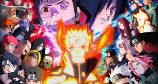
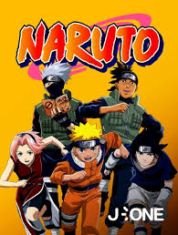

L'univers de Naruto est un univers de fiction créé par Masashi Kishimoto dans lequel se déroule l’histoire du shonen manga Naruto, et des anime associés. Dans l’univers de Naruto, issu de nombreuses influences, les protagonistes principaux sont des ninjas animés d’une force spirituelle appelée chakra, qui leur permet d’utiliser toute une palette de techniques de combat (jutsu) fictives, variant selon l’utilisateur. En complément à cette originalité, l’apparence de ces ninjas est loin des stéréotypes habituels du Japon féodal auxquels la série emprunte cependant de nombreuses notions, les mélangeant avec certaines venues du shintoïsme, du bouddhisme, ou même du taoïsme et de l’hindouisme. Les ninjas sont organisés en villages cachés, servant leur pays par des missions diverses et variées lorsqu’ils ne sont pas en guerre. Chaque village a sa propre organisation interne, et le chef, le plus puissant des ninjas du village, appelé kage, possède une certaine autonomie, même s’il est nommé par le daimyo, représentant le commandement civil du pays, et auquel il reste subordonné. La hiérarchie suit les règles du shonen, où les jeunes sont formés par leurs aînés
Bonne visite

